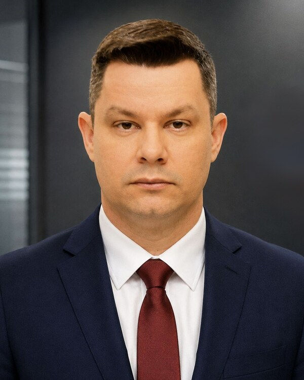
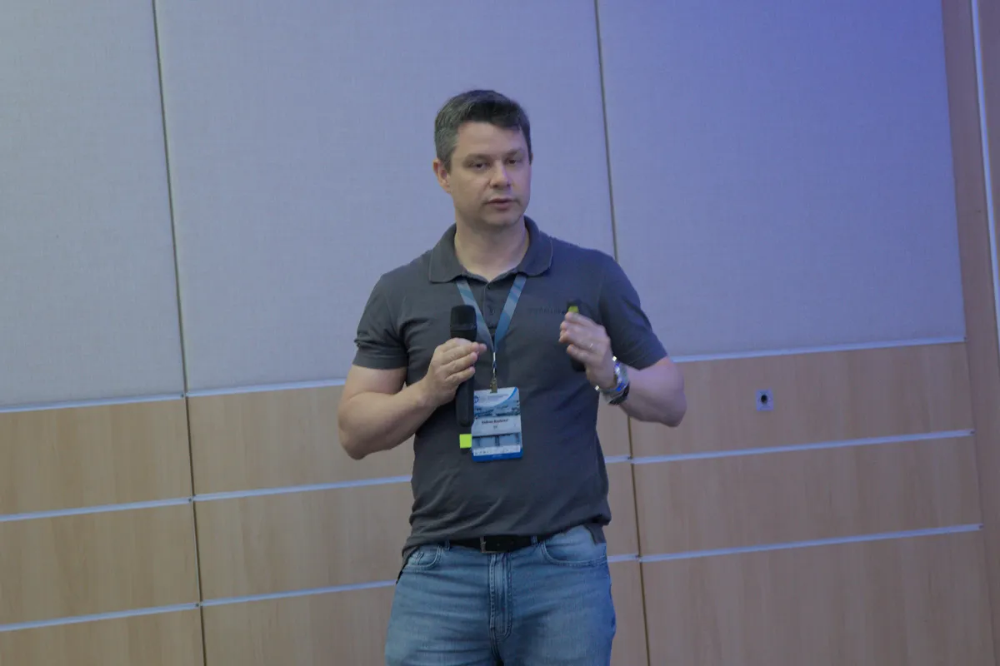

Sidnei Barbieri
AI/LLM security · Autonomous cyber defense · Adversary emulation
I build and evaluate AI-assisted systems for cyber defense, connecting cyber threat intelligence, adversary emulation, SOC environments and reproducible security experimentation. Released claims are paired with auditable evidence and a documented reproduction path.
PhD candidate in Computer Science at the Aeronautics Institute of Technology (ITA), Brazil, expected 2027. Former Visiting Research Scholar at CyLab, Carnegie Mellon University. Officer in the Brazilian Army.

01Research
Three questions, one method: measure it, then make it reproducible.
Autonomous cyber defense
What an LLM-assisted defender may do, stated as typed actions and checkable policy, so its plans can be verified instead of trusted — and measured across environments.
CTI to adversary emulation
What structured threat intelligence still does not say: the procedural and environment semantics an emulation needs before a campaign can run at all.
Reproducible security experimentation
Turning production evidence and literature into frozen, versioned artifacts that a reviewer can rerun, with the denominator of every number declared.
02Research software
Artifacts, not screenshots.
TopVenues
A reproducible cybersecurity literature corpus and the tool that queries it: frozen SQLite snapshots identified by SHA-256, ranked search, author analytics and review-ready exports. Published at SBSeg 2026 in both the main and tools tracks.
SOCpilot
Deterministic verification of policy compliance for LLM-generated incident-response plans, evaluated on production SOC incidents. Its artifact release is paused while an independent publication-safety review is completed.
PocketAgents
A manifest-driven library of autonomous defense agents with typed action boundaries and closed-loop enforcement.
STICKS
Reconstruction of campaign procedures from structured threat intelligence, using a versioned procedure catalog and deterministic admission under a declared laboratory contract. It records which choices come from the source and which the reconstruction supplies; admission alone is not execution evidence.
AutoSUT
Measurement of the environment requirements that structured threat intelligence supplies, and the deployment choices it leaves open. Its qualification workflow distinguishes a compatible laboratory plan from a deployed environment and an observed execution effect.
ARENA
An architecture for measuring whether an autonomous cyber defender transfers from the environment it was built in to one it has never seen.
HIKARI
A gamified threat-hunting and SOC-simulation range built on the Elastic Stack, Docker and CTFd, used for training and for reproducible blue-team exercises.
03Publications
Selected work.
2026
-
TopVenues: A Reproducible Corpus and Tooling Substrate for Cybersecurity Literature ReviewsSBSeg 2026, main track Proceedings arXiv
-
TopVenues: An Executable Corpus and Research Tool for Cybersecurity Literature ReviewsSBSeg 2026, tools track Proceedings
-
SOCpilot: Verifying Policy Compliance for LLM-Assisted Incident ResponsePreprint arXiv:2605.05501
-
PocketAgents: A Manifest-Driven Library of Autonomous Defense AgentsPreprint arXiv:2605.21694
-
ARENA: An Architecture for Measuring the Transferability of Autonomous Cyber DefensePreprint arXiv:2606.21377
-
AutoSUT: The Environment Semantics Gap in Structured CTI for Adversary EmulationPreprint arXiv:2606.08700
-
From Production SIEM to Reusable Cybersecurity ArtifactsPreprint arXiv:2606.21389
2025
-
Searching for Diamonds: Cross-Domain Opportunities in Cyber Threat IntelligenceIEEE Access DOI
-
HIKARI – Desafios Reais, Ameaças Ocultas: Uma Plataforma de Threat Hunting GamificadaSBSeg 2025, in Portuguese DOI
-
The Procedural Semantics Gap in Structured CTI: A Measurement-Driven STIX Analysis for APT EmulationPreprint arXiv:2512.12078
The complete list, including earlier work on machine-learning intrusion detection and workload generation, is on ORCID and Lattes.
04Talks

TopVenues at SBSeg 2026
Presenting the corpus as an executable research artifact: how a literature review gets a denominator that is declared, frozen, and reproducible from one command — and what the corpus cannot answer.
05Background
- 2023 — present
- PhD researcher, Aeronautics Institute of Technology (ITA) LLM-assisted and autonomous cyber defense, CTI, adversary emulation, SOC experimentation.
- 2025 — 2026
- Visiting Research Scholar, CyLab, Carnegie Mellon University Doctoral research period on CTI operationalization and AI/LLM-assisted cyber defense.
- 2019 — 2023
- CTI analyst and researcher, Brazilian Cyber Defense Center (CDCiber) Threat analysis, threat hunting, telemetry-driven monitoring and incident-response support.
- 2015 — 2017
- Brazilian Cyber Defense Center (CDCiber) Head of the IT Division, then of Systems Security, and assistant to the Head of Intelligence.
- 2002 — present
- Brazilian Army, currently Captain Information technology, intelligence support, cybersecurity and cyber operations; Locked Shields 2022.
- Education
- MSc in Computer Science, ITA (2019) · BSc in Computer Science, URI (2009) Specializations in cyber warfare (CIGE, 2020) and information systems management (2016).
06Contact
Collaboration is welcome; releases remain evidence-bound.
My research software is developed as part of my work on reproducible and autonomous cyber defense, and is released when its evidence, licensing, and privacy boundaries pass validation. Research collaboration, institutional support, licensing and technology-transfer inquiries are welcome by email.